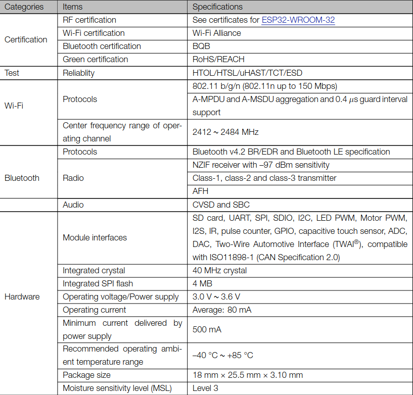
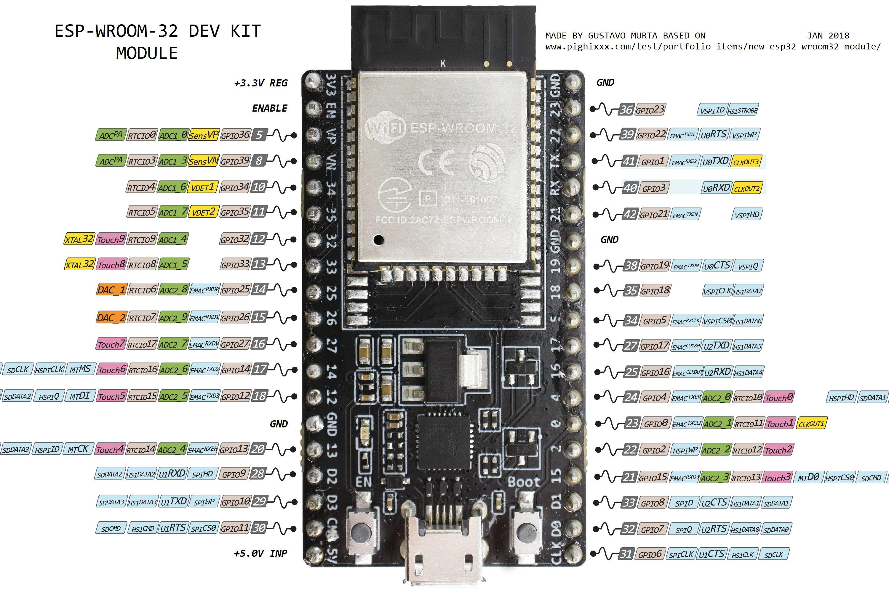

BytesOfProgress
Wiki
ESP32 Datasheet
General information
The ESP32 is a low-cost, low-power 32-bit microcontroller family from the chinese company Espressif that was introduced in 2016. Because of their open design, the microcontrollers enable the construction and networking of network-based actuators and sensors. The GNU Compiler Collection including toolchain is available as a free development tool.
When talking about an "ESP32", most people refer to the ESP32-WROOM-32.
Espressif's DocumentationSpecifications
PinOut
back